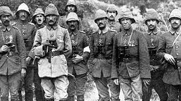
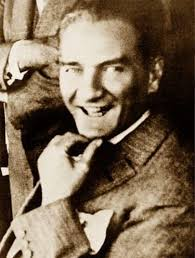
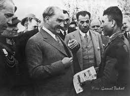
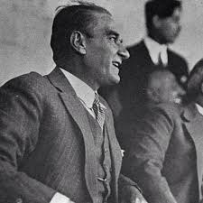

Türkiye Cumhuriyeti'nin kurucusu olan ulu önder Mustafa Kemal Atatürk, sadece Türkiye'de değil dünya çapında pek çok insanın, her sene hikayesini merak ettiği en güçlü tarihi isimlerden biridir. 1881 yılında Selanik'te doğdu. Özellikle Çanakkale'de kazandığı zafer ile I. Dünya Savaşı'nın seyrini değiştiren Mustafa Kemal Atatürk, bu savaş ile beraber tüm dünya tarafından tanınmasıyla tarihe geçmiştir. Arkasında pek çok eser, kitap, devrim ile kocaman bir ülke bırakan Atatürk, dünyanın gelmiş geçmiş en büyük liderlerinden biri olarak tarihe geçmiştir. 10 Kasım 1938 yakalandığı siroz hastalığından kurtulamayarak İstanbul'da Dolmabahçe Sarayı'nda hayata gözlerini yumdu. Daha Fazla bilgi sahibi olmak için wikipedia sayfasını tıklayabilirsiniz.

Ben size taarruz emretmiyorum. Ölmeyi emrediyorum. (I. Dünya Savaşı - Çanakkale Cephesi - 25 Nisan 1915)



TIMELINE
Osmanlı İtalya’ya karşı yenilmiş ve bu yenilgi sonucu Trablusgarp, Fizan ve Sirenayka bölgelerini kaybetmiştir.Trablusgarp Savaşı sırasında Mustafa Kemal Atatürk binbaşı rütbesi ile Tobruk Muharebesini yöneterek askeri alandaki başarısını göstermiştir.
Osmanlı Devleti I. Dünya Savaşı’ndan yenik ayrılınca Mondros Ateşkes Antlaşması imzalandı. Bu antlaşma uyarınca vatan topraklarının işgalinin başlaması üzerine Mustafa Kemal, 19 Mayıs 1919’da Samsun’a çıkarak milli mücadeleyi başlattı.
Türk ordusunun büyük bir azimle savaştığı bir cephe olan Kurtuluş Savaşı Cephesi 31 Mart 1921 senesine kadar sürmüş ve çok kanlı geçmiştir. Mustafa Kemal Bu savaş sonrası `milletin makus talihini yenen bir savaş olmuştur` şeklinde bir ifade ile bu savaşın önemini anlatmıştır.
Mustafa Kemal, 23 Nisan 1920’de TBMM’nin açılması ile Meclis ve Hükümet Başkanlığına seçildi. Sakarya Savaşı’nın kazanılmasının ardından, Gazilik unvanı ve Mareşallik rütbesi ile onurlandırıldı. Mustafa Kemal, 29 Ekim 1923’de cumhuriyetin ilan edilmesi ile beraber Türkiye Cumhuriyeti’nin ilk Cumhurbaşkanı oldu.
Mustafa Kemal Atatürk Yunanlara karşı savaşılan bu cepheye 18 Temmuz 1921 tarihinde bizzat gelerek gözlemlemiştir. Ordunun yeniden güçlendirilebilmesi için Sakarya’ya kadar çekilmesini söyleyen Atatürk Yunan ordularına karşı bir şans elde etmiştir. Bu cephede savaşırken Başkomutan unvanı alan Atatürk, 12 Ağustos 1921 günü bu unvanı ile ordunun başına geçmiştir.